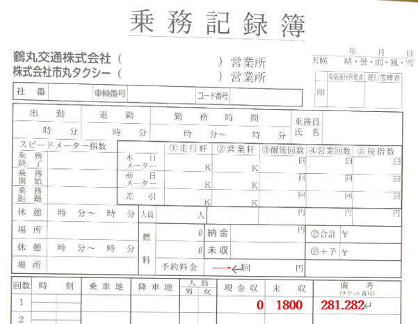
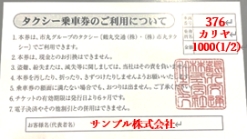

第4章：日報およびチケット裏面への記載方法
- チケットを利用した際は、日報およびチケット裏面に以下の通り記入してください。
- チケット裏面には、車両番号（3桁）、乗務員名（フルネーム）、金額を記入。
- 金額記入例：
- チケット1枚利用時（運賃が1,000円以下）：支払われた運賃額のみを記入。例: 800
- 複数枚利用時や現金併用時：1枚目には「使用したチケットの額面 / 総額」、2枚目以降も同様。例: 1000 / 1800, 800 / 1800
- 日報の記載は通常のチケット受取時と同一。チケット番号を必ず記載し、現金収/未収について不備がないよう記載。
- 「空欄はすべて埋める」の認識でOK。


トップページに戻る